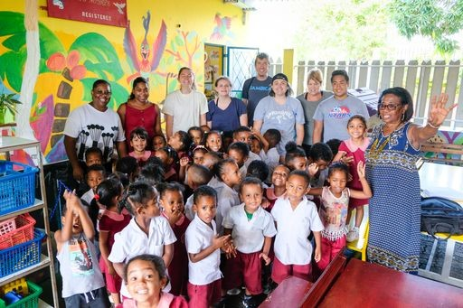
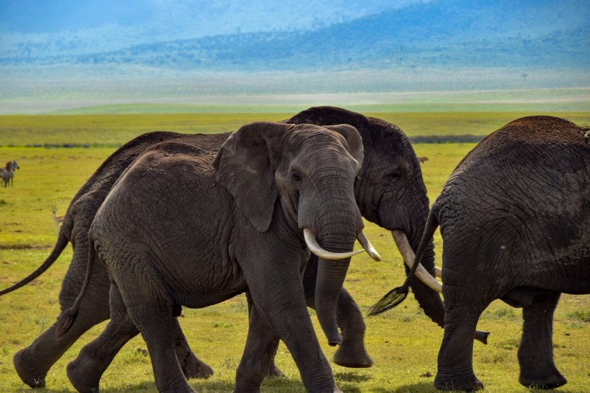

El voluntariado internacional en orfanatos consisten en ayudar a niños de familias
con pocos
recursos, proporcionándoles comida, ropa y una educación básica. Con el objetivo de cubrir las
necesidades básicas de los pequeños y enfocado a que se sientan queridos y acompañados en todo
momento. En estos voluntariados se organizan todo tipo de actividades para jugar, entretener y
enseñar a los niños procurando que su estancia sea más amena y divertida. También se realizan
algunas tareas diarias del orfanato para ayudar en la gestión del centro y reducir el trabajo de
las
cuidadoras.
 El voluntariado internacional de enseñanza
El voluntariado internacional de enseñanza consiste en dar la oportunidad a niños y
a adultos en
exclusión social a acceder a una educación básica.
Los voluntarios impartirán clases o ayudarán a los profesores a impartirlas, esto dependerá de
las
necesidades de cada centro educativo.
Algunos proyectos se dirigirán a niños sin escolarizar debido a su situación económica y otros
proyectos se orientaran a niños que debido al bajo nivel educativo de su país necesitaran clases
de
refuerzo.

Un voluntariado internacional de animales consiste principalmente en el cuidado y
la protección de
los animales de la zona. Se realizarán diversas tareas para mejorar las condiciones de vida de
los
animales y para satisfacer las necesidades tanto de alimentación, limpieza y sanitarias de
estos.
Si eres un gran amante de los animales es una gran elección, puesto que estarás en contacto con
ellos todos los días y podrás ayudarlos, cuidarlos y conocer cómo viven en su hábitat natural.
 El voluntariado de construcción
El voluntariado de construcción consiste mayoritariamente en ayudar a los locales
mediante la
reparación o construcción de sus hogares, escuelas, pozos, carreteras u hospitales. Los
voluntarios
ayudarán a los constructores profesionales en las labores que se les necesite.
El voluntariado corporativo Organizamos un programa de voluntariado a medida para tu empresa, con
el objetivo de que los empleados desarrollen la capacidad de trabajo en equipo, sientan nuevas motivaciones y
proximidad con sus compañeros.
Nos encargamos de asesorar y organizar todo el programa. De orientar a los trabajadores previamente y durante el
voluntariado, y realizar un seguimiento de su trabajo durante el voluntariado.
El programa es totalmente personalizable a la identidad corporativa y adaptable al tamaño de la empresa. Puede
organizarse cualquier época del año y en cualquiera de los destinos en los que trabajamos.